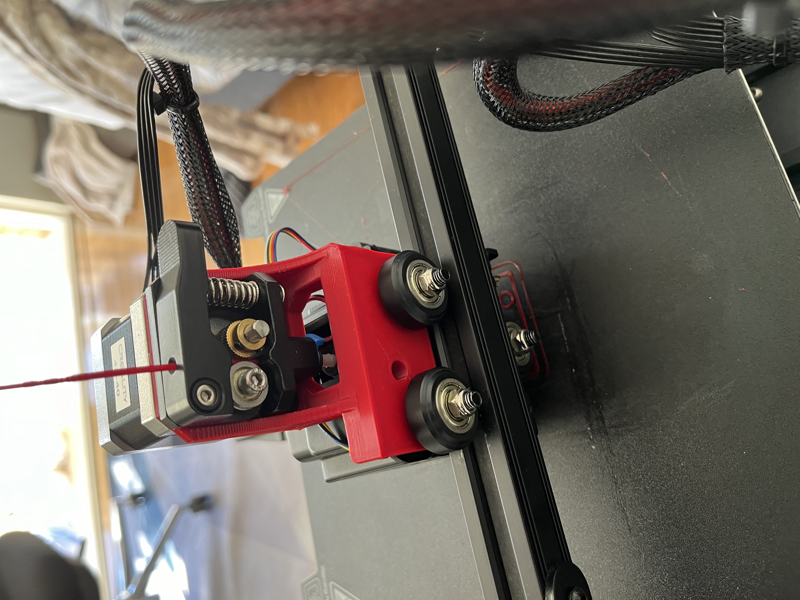
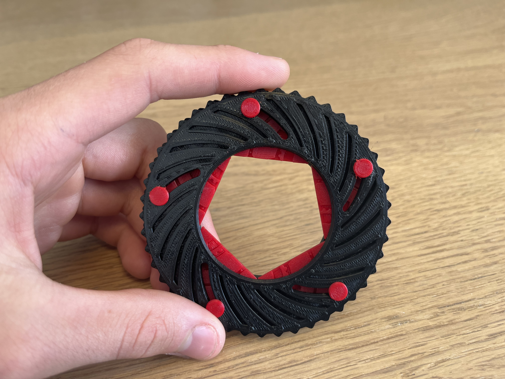
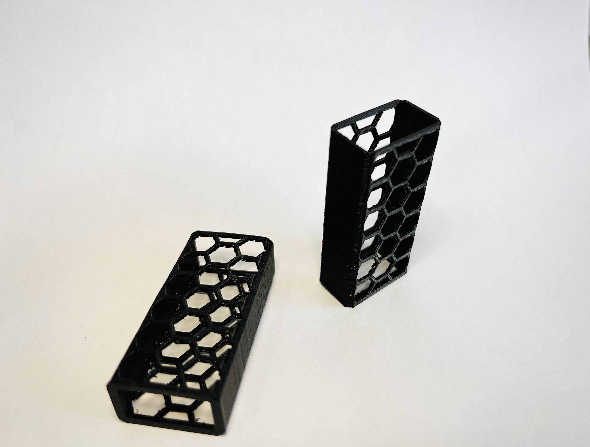
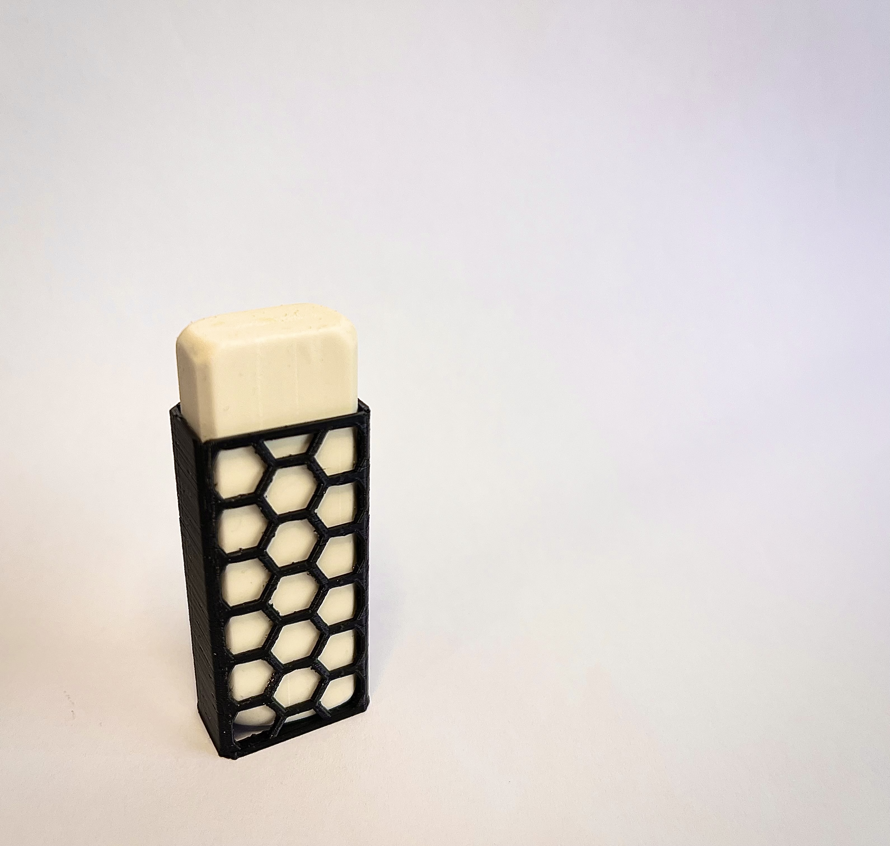
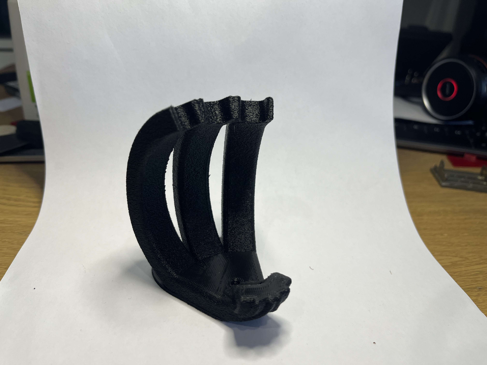
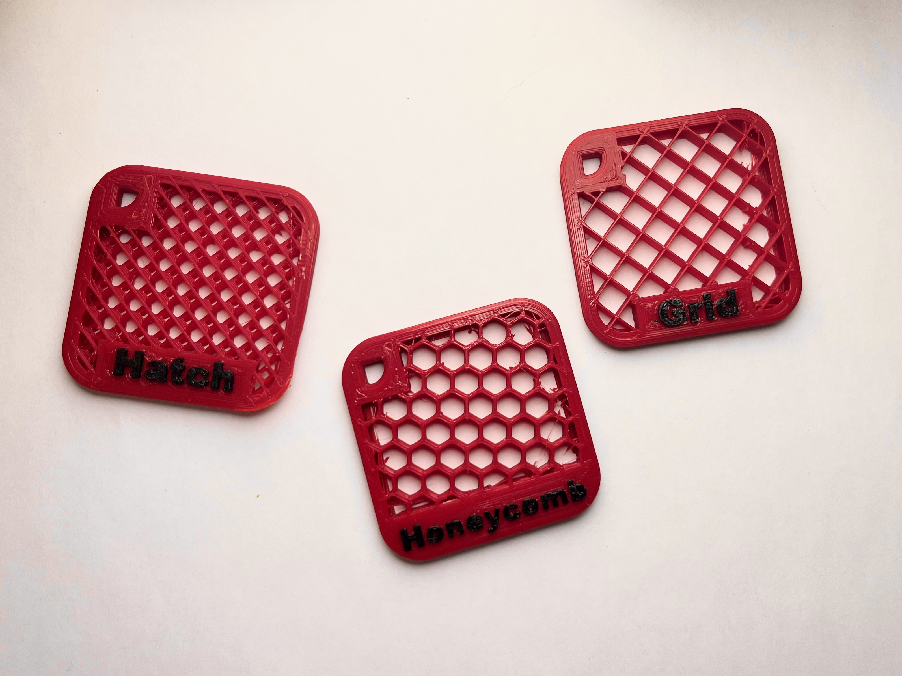
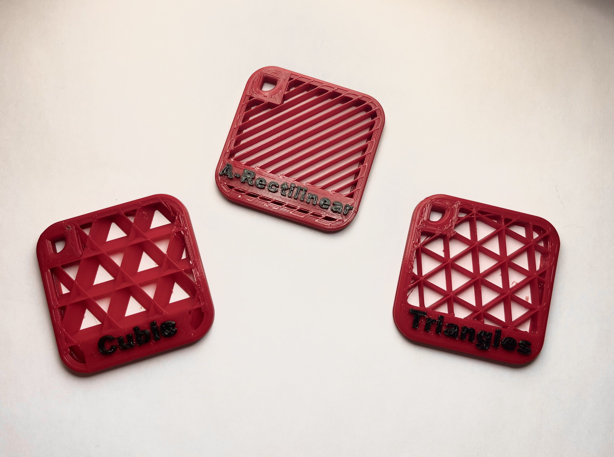
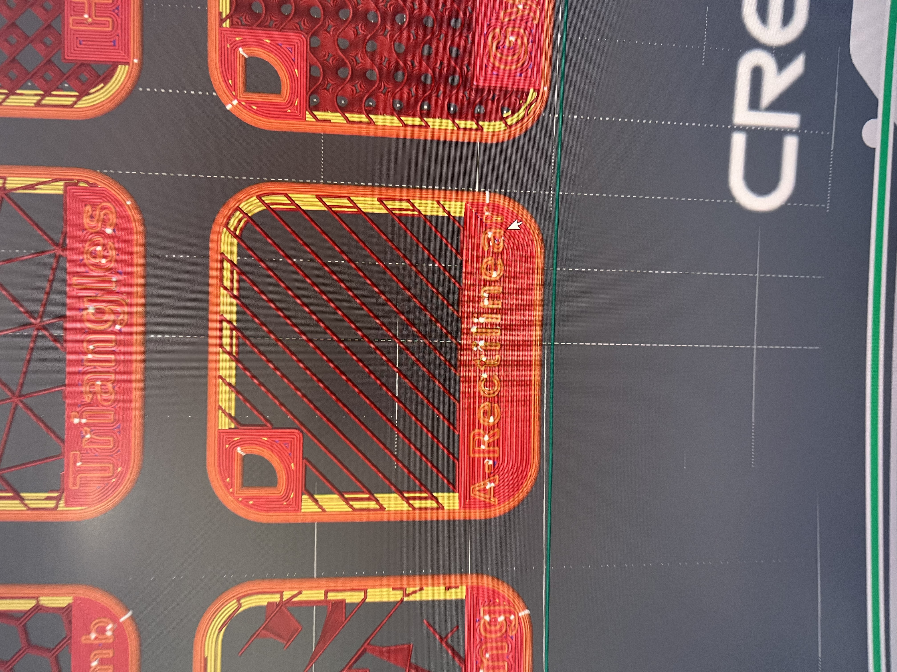

3D Design & Printing
Printers
An Ender 3 with a modified toolhead carriage.

MakerWorld Models
I design my own 3D printable models and publish them on MakerWorld, where they can earn Maker Points - and payouts - based on downloads and prints by other users.
Iris - a mechanical iris/aperture model.



Infill Pattern Tests
A set of test prints comparing different slicer infill patterns - Cubic, A-Rectilinear, Triangles, Hatch, Honeycomb, Grid, and Chords - to see how each looks and behaves before choosing one for a published model.



